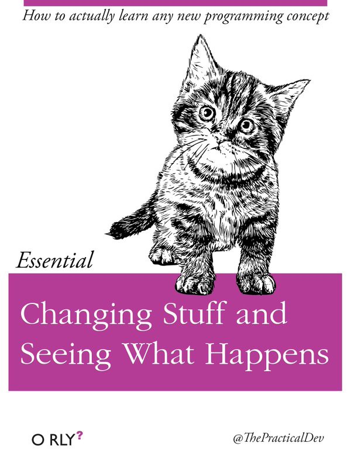

<!DOCTYPE html>
<html lang="en">
  <head>
    <meta charset="utf-8" />
    <meta name="viewport" content="width=device-width, initial-scale=1.0, maximum-scale=1.0, user-scalable=no" />

    <title>Fiberplane Template Reference</title>
    <link rel="shortcut icon" href="./favicon.ico" />
    <link rel="stylesheet" href="./dist/reset.css" />
    <link rel="stylesheet" href="./dist/reveal.css" />
    <link rel="stylesheet" href="./dist/theme/simple.css" id="theme" />
    <link rel="stylesheet" href="./css/highlight/nord.css" />

    <link rel="stylesheet" href="./_assets/theme/fiberplane.css" />

  </head>
  <body>
    <div class="reveal">
      <div class="slides"><section  data-markdown><script type="text/template">

<p class="r-stretch"></p>

## reveal.js <!-- .element: class="fragment fade-up"-->
</script></section><section  data-markdown><script type="text/template">
## reveal.js

This is the Fiberplane slides template for working with `reveal.js` - a powerful framework for HTML-based slides.
</script></section><section  data-markdown><script type="text/template">
# Why HTML slides?

Markdown-based (i.e.: adding code is not a pain) <!--.element: class="fragment" -->

Source control and versioning (<3 git) <!--.element: class="fragment" -->

URL publishing (with static site builders like Netlify or Vercel) <!--.element: class="fragment" -->
</script></section><section  data-markdown><script type="text/template">
You can add your slide content as markdown to the `fiberplane.md` file using `---` as slide separators.
</script></section><section  data-markdown><script type="text/template">
## Headings

_☝️ lvl 2_ <!-- .element: class="fragment" data-fragment-index="2" -->

There are four levels of headings defined in the template.

### I'm lvl 3 <!-- .element: class="fragment" data-fragment-index="0" -->

#### I'm lvl 4 <!-- .element: class="fragment" data-fragment-index="1" -->
</script></section><section  data-markdown><script type="text/template">
<!-- .slide: class="r-left" -->

## Images

you can add images to the slides using markdown

```md

```

or if the image is too large for the screen - use the following HTML snippet

```html
<p class="r-stretch"></p>
```

Not pretty but it works.
</script></section><section  data-markdown><script type="text/template">
<p class="r-stretch"></p>
</script></section><section  data-markdown><script type="text/template">

</script></section><section  data-markdown><script type="text/template">
<!-- .slide: data-auto-animate data-auto-animate-id="code" -->

## Code

You can add code cells with three backticks and specify syntax highlighting:

<code>```jsonnet</code>

```jsonnet[]
function(
    event={}
)
  fp.notebook
    .new('Incident Response - ' + event.id)
    .addCells([
      c.text('Environment: ' + event.environment),
      c.text('On-call:'),
      std.map(
        function(assignees)
            c.listItem.unordered(assignees.name),
            event.assignees
        )
    ])
```
</script></section><section  data-markdown><script type="text/template">
<!-- .slide: data-auto-animate data-auto-animate-id="code" -->

Code can be further highlighted and animated by specifying line numbers in square brackets like this:

<code>```jsonnet[|1-3|4-5|6-14]]</code>

```jsonnet[|1-3|4-5|6-14]]
function(
    event={}
)
  fp.notebook
    .new('Incident Response - ' + event.id)
    .addCells([
      c.text('Environment: ' + event.environment),
      c.text('On-call:'),
      std.map(
        function(assignees)
            c.listItem.unordered(assignees.name),
            event.assignees
        )
    ])
```
</script></section><section  data-markdown><script type="text/template">
Including very long lines of code such as this:

```rust[|1-10|35-46|59-66]
use crate::primitives::Primitive;
use quote::{quote, ToTokens};
use std::{collections::BTreeMap, hash::Hash};
use syn::Item;

mod cargo_dependency;
mod custom_type;
mod enums;
mod structs;
mod type_ident;

pub use cargo_dependency::CargoDependency;
pub use custom_type::CustomType;
pub use enums::{Enum, EnumOptions, Variant, VariantAttrs};
pub use structs::{Field, FieldAttrs, Struct, StructOptions};
pub use type_ident::TypeIdent;

pub type TypeMap = BTreeMap<TypeIdent, Type>;

#[derive(Clone, Debug, Eq, Hash, PartialEq)]
pub enum Type {
    Alias(String, TypeIdent),
    Container(String, TypeIdent),
    Custom(CustomType),
    Enum(Enum),
    List(String, TypeIdent),
    Map(String, TypeIdent, TypeIdent),
    Primitive(Primitive),
    String,
    Struct(Struct),
    Tuple(Vec<TypeIdent>),
    Unit,
}

impl Type {
    pub fn from_item(item_str: &str) -> Self {
        let item = syn::parse_str::<Item>(item_str).unwrap();
        match item {
            Item::Enum(item) => Type::Enum(enums::parse_enum_item(item)),
            Item::Struct(item) => Type::Struct(structs::parse_struct_item(item)),
            item => panic!(
                "Only struct and enum types can be constructed from an item. Found: {:?}",
                item
            ),
        }
    }

    pub fn name(&self) -> String {
        match self {
            Self::Alias(name, _) => name.clone(),
            Self::Container(name, ident) => format!("{}<{}>", name, ident),
            Self::Custom(custom) => custom.ident.to_string(),
            Self::Enum(Enum { ident, .. }) => ident.to_string(),
            Self::List(name, ident) => format!("{}<{}>", name, ident),
            Self::Map(name, key, value) => format!("{}<{}, {}>", name, key, value),
            Self::Primitive(primitive) => primitive.name(),
            Self::String => "String".to_owned(),
            Self::Struct(Struct { ident, .. }) => ident.to_string(),
            Self::Tuple(items) => format!(
                "({})",
                items
                    .iter()
                    .map(ToString::to_string)
                    .collect::<Vec<_>>()
                    .join(", ")
            ),
            Self::Unit => "()".to_owned(),
        }
    }
}

impl ToTokens for Type {
    fn to_tokens(&self, tokens: &mut proc_macro2::TokenStream) {
        (match self {
            Type::Alias(name, _) | Type::Custom(CustomType { rs_ty: name, .. }) => {
                let ty = syn::parse_str::<syn::Type>(name).unwrap();
                quote! { #ty }
            }
            Type::Container(name, ident) | Type::List(name, ident) => {
                let name = syn::parse_str::<syn::Type>(name).unwrap();
                quote! { #name<#ident> }
            }
            Type::Struct(Struct { ident, .. }) | Type::Enum(Enum { ident, .. }) => {
                quote! { #ident }
            }
            Type::Map(name, k, v) => {
                let name = syn::parse_str::<syn::Type>(name).unwrap();
                quote! { #name<#k, #v> }
            }
            Type::Primitive(primitive) => quote! { #primitive },
            Type::String => quote! { String },
            Type::Tuple(items) => quote! { (#(#items),*) },
            Type::Unit => quote! { () },
        })
        .to_tokens(tokens)
    }
}


```
</script></section><section  data-markdown><script type="text/template">
## Some formatting helpers (in markdown)
</script></section><section  data-markdown><script type="text/template">
Add `<!-- .element: class="fragment"-->` to an element if you want to sequence it:

show this

then this <!-- .element: class="fragment"-->
</script></section><section  data-markdown><script type="text/template">
<!-- .slide: class="r-left" -->

Add `<!-- .slide: class="r-left" -->` if you want all text in the slides to align left.

Like in this slide.
</script></section><section  data-markdown><script type="text/template">
Documentation of the reveal-md project is available here: [webpro/reveal-md](https://github.com/webpro/reveal-md)

Full documentation of the reveal.js is available here: [revealjs.com](https://revealjs.com/)

👋
</script></section></div>
    </div>

    <script src="./dist/reveal.js"></script>

    <script src="./plugin/markdown/markdown.js"></script>
    <script src="./plugin/highlight/highlight.js"></script>
    <script src="./plugin/zoom/zoom.js"></script>
    <script src="./plugin/notes/notes.js"></script>
    <script src="./plugin/math/math.js"></script>
    <script>
      function extend() {
        var target = {};
        for (var i = 0; i < arguments.length; i++) {
          var source = arguments[i];
          for (var key in source) {
            if (source.hasOwnProperty(key)) {
              target[key] = source[key];
            }
          }
        }
        return target;
      }

      // default options to init reveal.js
      var defaultOptions = {
        controls: true,
        progress: true,
        history: true,
        center: true,
        transition: 'default', // none/fade/slide/convex/concave/zoom
        plugins: [
          RevealMarkdown,
          RevealHighlight,
          RevealZoom,
          RevealNotes,
          RevealMath
        ]
      };

      // options from URL query string
      var queryOptions = Reveal().getQueryHash() || {};

      var options = extend(defaultOptions, {"hash":true,"center":true,"margin":0.1,"transition":"fade","transitionSpeed":"fast","controls":false,"progress":true,"autoAnimateEasing":"ease-in-out","autoAnimateDuration":0.4}, queryOptions);
    </script>


    <script>
      Reveal.initialize(options);
    </script>
  </body>
</html>
